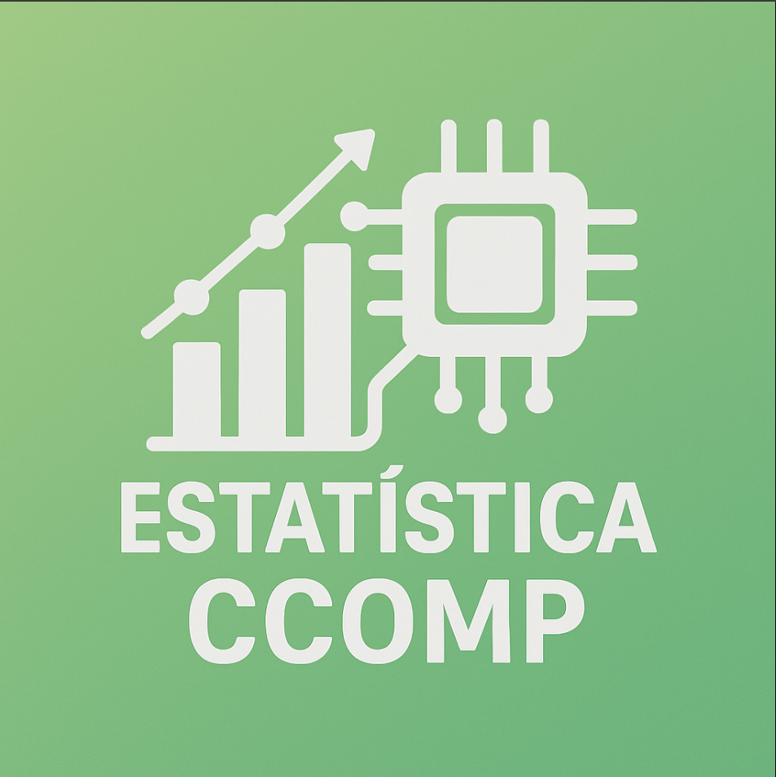

Estatística
Créditos
Aulas
AULA 1: População, Amostra, Variável Quantitativa E Qualitativa
AULA 2: Tabela de Distribuição de Frequência – TDF
AULA 3: Gráficos Estatísticos
AULA 4: Medidas de Tendência Central
AULA 5: Separatrizes: Quartil, Quintil, Decil e Percentil
AULA 6: Medidas de Dispersão ou Variabilidade
AULA 7: Coeficientes Estatísticos: Assimetria e Curtose
AULA 9: Probabilidades: Distribuição Binomial e Poisson
AULA 10: Distribuição Normal: Tabela da Variável “Z”
AULA 11: Estimativa: Intervalo de Confiança da Média
AULA 12: Modelos de Distribuição: STUDENT e QUI-QUADRADO
AULA 13: Testes e Hipóteses
AULA 14: Correlação e Regressão Linear
Sobre Estatística
📊 Sobre Estatística
Conheça a história, importância e aplicações desta ciência fundamental
Origem e História
Importância
Aplicações
Curiosidades